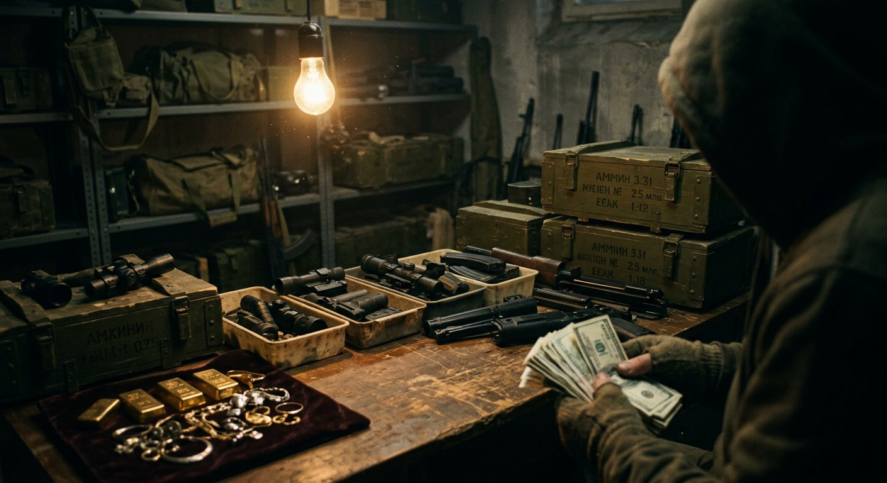
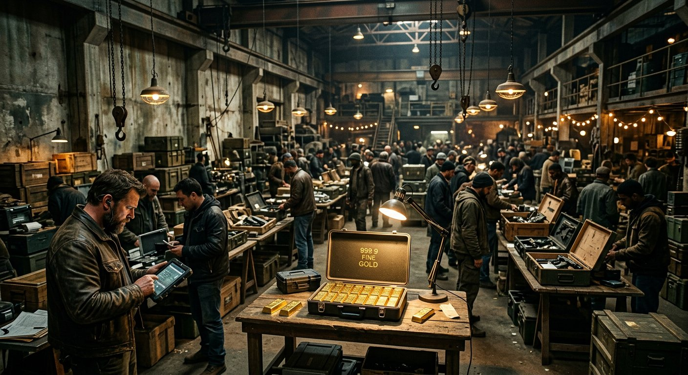

Ce qu’un raid rapporte vraiment
La question n’est pas « combien j’ai ramassé » mais « combien il me reste après avoir payé le kit, les munitions et les soins ». Ce sont deux nombres différents, et le second est le seul qui décide si tu peux rejouer demain.
Estimateur de rentabilité
Renseigne tes chiffres, ceux que tu observes en jeu. Le calcul sépare le butin qui exige une extraction de ce qui est protégé dans le coffre sécurisé, parce que les deux ne courent pas le même risque.
Deux lectures possibles. Si le résultat est négatif, le problème vient souvent du coût du kit plus que du butin : un kit trop cher rend chaque mort insupportable. Si le résultat est positif mais faible à l’heure, le problème est la durée, un raid de trente minutes pour trois cent mille Tekniq vaut moins qu’un raid de douze minutes pour cent cinquante mille.
Marchand ou hôtel des ventes
Le marchand paie tout de suite, sans frais, mais moins cher. L’hôtel des ventes paie mieux quand la demande existe, et prélève une commission. La comparaison se fait au net, pas au prix affiché.
Ce que les vieux chiffres ne disent plus
Les recettes « un million par jour » et les listes de farming trouvées sur les forums datent souvent d’une autre saison, d’une autre carte ou d’un autre équilibrage. Certaines viennent de sites qui vendent des services de boosting : elles sont invérifiables et parfois contraires aux conditions d’utilisation.
Ce qui reste valable, en revanche, c’est la méthode : calculer la valeur par case, vérifier le prix du jour dans le client, et sortir avec des objets compacts. Une pièce rare qui prend six cases peut rapporter moins qu’une pile d’objets utiles qui en prend deux.

Le coffre sécurisé, dans la pratique
Le réflexe rentable tient en trois gestes. Une pile de munitions supérieures y reste en permanence, pour ne jamais dépendre de ce qu’on trouvera sur place. Un kit de réparation y prend place avant le départ. Et chaque objet de valeur trouvé en cours de raid y entre immédiatement, ce qui transforme une mort en fin de raid en simple perte de temps.
Une munition sortie du coffre peut être chargée directement sur l’arme, sans repasser par les poches. C’est un détail qui sauve un échange quand on se retrouve à sec au mauvais moment.
Voir aussi : ce qui se revend bien et les conditions de sortie.
Hôtel des ventes : ce qui s’y vend, ce qui ne s’y vend pas
Le marchand paie un prix fixe, immédiat, sans négociation. L’hôtel des ventes paie mieux mais prend une commission et du temps. La règle qui en découle est simple : le médiocre part chez le marchand, le recherché part à l’hôtel.
| Palier | Où vendre | Pourquoi |
|---|---|---|
| Gris et vert | Marchand | La commission mange la marge : quelques centaines d’Alloy d’écart ne valent pas l’attente. |
| Bleu | Hôtel des ventes | Le palier de travail. Les relevés communautaires tournent autour de 10 000 à 15 000 Alloy par case d’inventaire, avec des écarts selon la demande. |
| Violet et rouge | Hôtel des ventes, à prix surveillé | Les objets rouges se comptent parfois en centaines de milliers d’Alloy. Un prix posé trop haut ne se vend pas et revient. |
Ordres de grandeur relevés par des sites communautaires en septembre 2026. Le marché bouge avec les événements : vérifie les annonces en cours avant de poser un prix.
Trois façons de gagner de l’Alloy sans tirer
- Le revente d’écart. Surveiller les annonces sous-évaluées d’objets recherchés et les remettre en vente au prix du marché. Ça ne demande aucun raid, seulement de la patience et une lecture régulière.
- L’artisanat du site noir. Acheter les matériaux, fabriquer ce qui se revend cher, vendre le produit. Les marges citées par la communauté sur quelques recettes dépassent largement le coût des matériaux, mais elles dépendent du prix d’entrée : un craft n’est rentable que si les matériaux sont achetés bas.
- La vente après correctif. Une arme améliorée fait monter la demande sur ses accessoires, une arme réduite la fait baisser. Surveiller les notes de version rapporte parfois plus qu’un raid.
À l’inverse, deux dépenses qui plombent une économie : acheter du matériel neuf quand de l’occasion abîmée fait le même travail, et remplir son coffre sécurisé d’objets moyens au point de ne plus pouvoir y glisser la trouvaille du raid.

